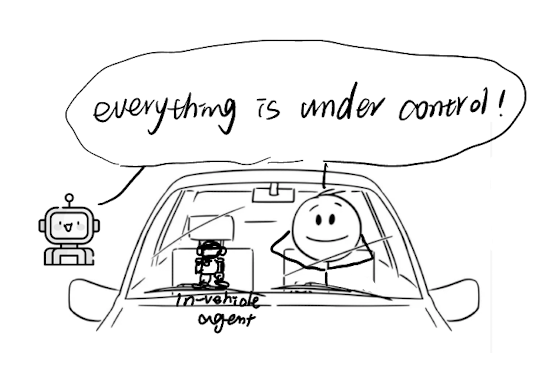

Human–AI teaming
Designing voice agents as driving teammates
Exploring how the social behavior of a voice agent can support coordination between drivers and automated vehicles.

Research question
How can a voice agent communicate in ways that help drivers and automated driving systems work together?
Research direction
We explore social cues in voice agents, considering what both the driver and the automated system can do. The project examines common barriers to coordination and explores design options for voice agents that drivers can relate to and rely on.